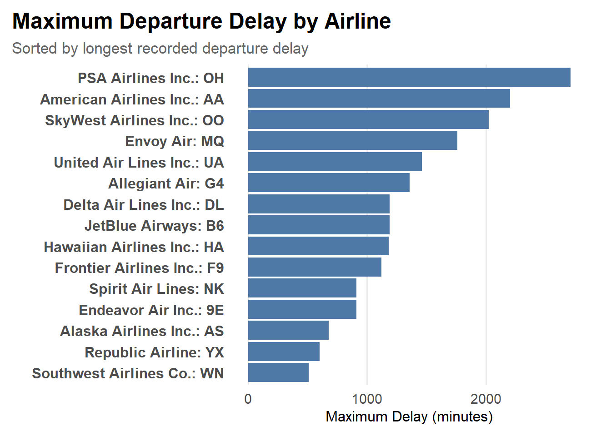
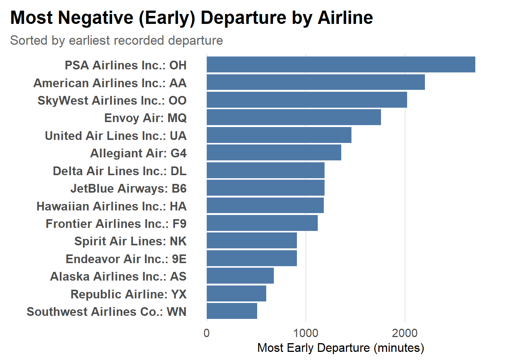
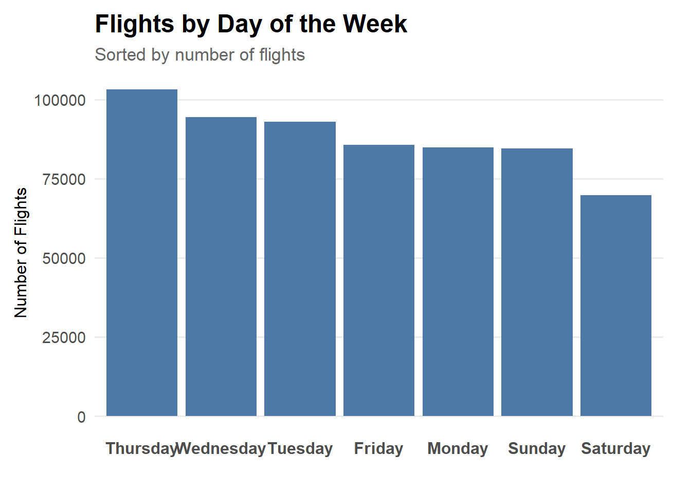
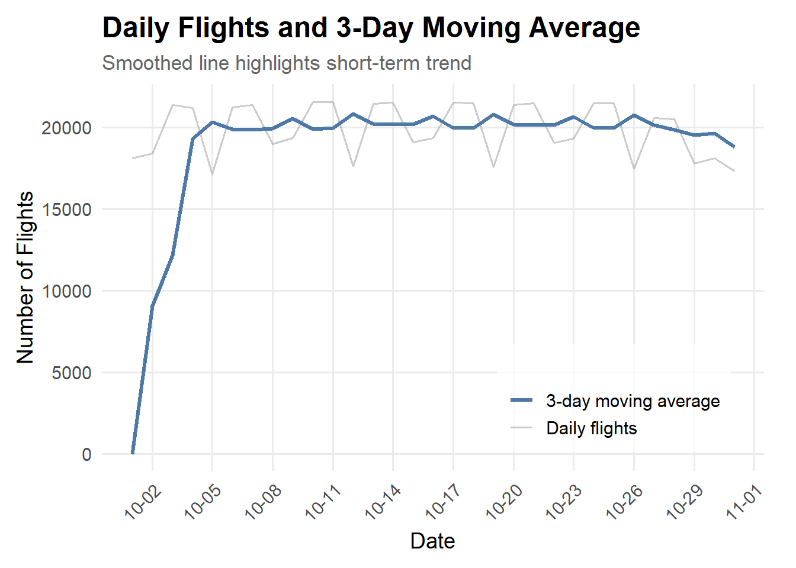
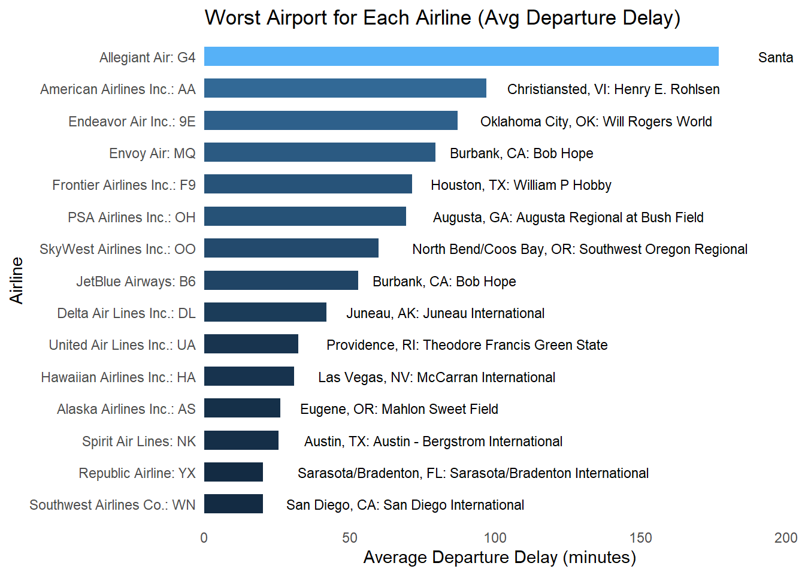
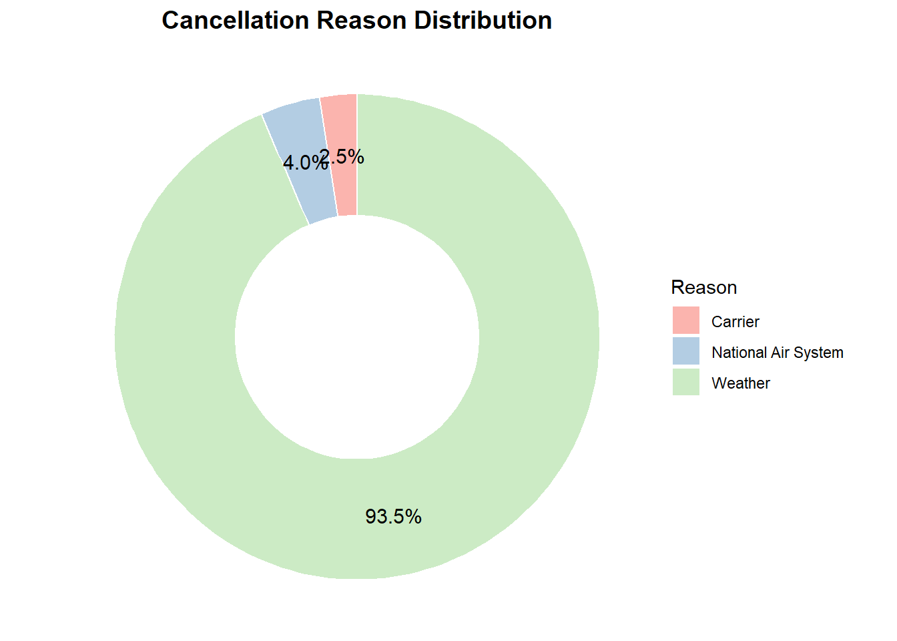
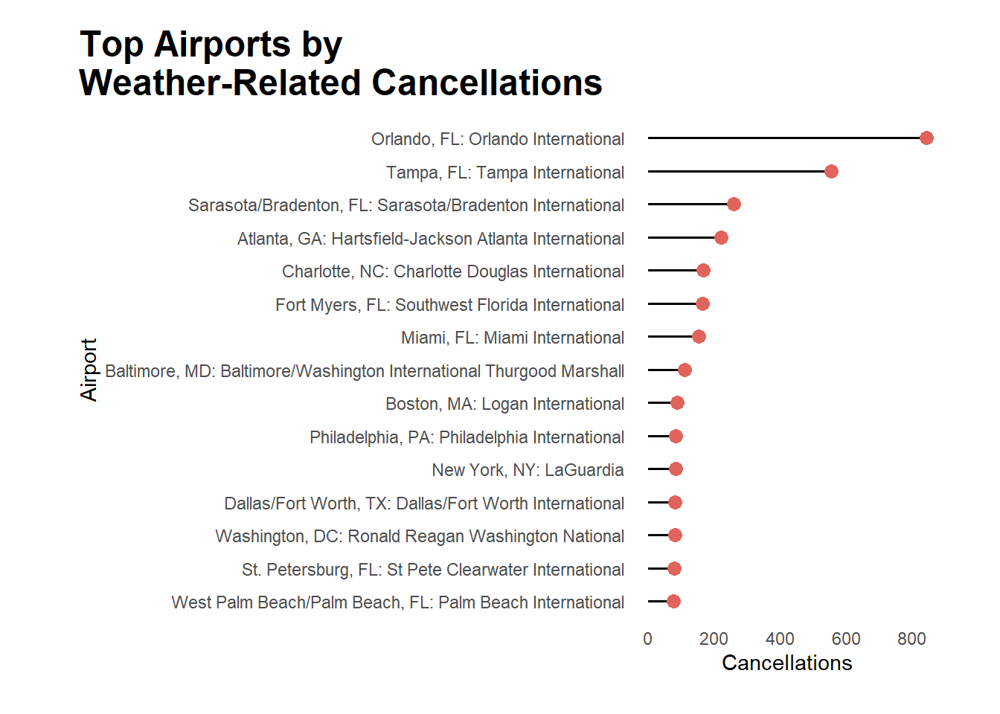

Code
library(tidyverse)
library(lubridate)
library(readr)
library(ggplot2)
library(dplyr)
library(stringr)
library(forcats)Commercial aviation is a complex system shaped by airlines, airports, and time-dependent demand patterns. In this report, we analyze a subset of the FAA On-Time Performance data on Oct-2024 to answer:
Our goal is not only to show charts, but to build a cohesive narrative about delays, cancellations, and congestion in the US aviation network.
We begin by examining the worst-case departure delays for each airline.
df_max_delay_airline <- read_csv("data/p1.csv")
df_early_airline <- read_csv("data/p2.csv")
df_weekday <- read_csv("data/p3.csv")
df_worst_airport <- read_csv("data/p4.csv")
df_worst_airport_by_airline <- read_csv("data/p5.csv")
df_cancel_reason <- read_csv("data/p6b.csv")
df_ma3 <- read_csv("data/p7.csv")
df_max_delay_airline |>
arrange(MaxDepDelay) |>
mutate(Airline = factor(Airline, levels = Airline)) |>
ggplot(aes(x = Airline, y = MaxDepDelay)) +
geom_col(fill = "#4E79A7") +
coord_flip() +
labs(
title = "Maximum Departure Delay by Airline",
subtitle = "Sorted by longest recorded departure delay",
x = "",
y = "Maximum Delay (minutes)"
) +
theme_minimal(base_size = 14) +
theme(
plot.title.position = "plot",
plot.title = element_text(face = "bold", size = 18, hjust = 0),
plot.subtitle = element_text(size = 13, colour = "gray40", hjust = 0),
axis.text.y = element_text(size = 12, face = "bold"),
axis.title.x = element_text(size = 12),
panel.grid.major.y = element_blank(),
panel.grid.minor = element_blank(),
plot.margin = margin(10, 20, 10, 10)
)
Insight:
In summary, extreme delays are highly dependent on an airline’s operating model and route structure; regional airlines are more prone to abnormally high delays.
df_early_airline |>
arrange(MaxEarlyDeparture) |>
mutate(Airline = factor(Airline, levels = Airline)) |>
ggplot(aes(x = Airline, y = MaxEarlyDeparture)) +
geom_col(fill = "#4E79A7") +
coord_flip() +
labs(
title = "Most Negative (Early) Departure by Airline",
subtitle = "Sorted by earliest recorded departure",
x = "",
y = "Most Early Departure (minutes)"
) +
theme_minimal(base_size = 14) +
theme(
plot.title.position = "plot",
plot.title = element_text(face = "bold", size = 18, hjust = 0),
plot.subtitle = element_text(size = 13, colour = "gray40", hjust = 0),
axis.text.y = element_text(size = 12, face = "bold"),
axis.title.x = element_text(size = 12),
panel.grid.major.y = element_blank(),
panel.grid.minor = element_blank(),
plot.margin = margin(10, 20, 10, 10)
)
Insight:
Surprisingly, the airlines with the largest early departures are almost identical to those in the previous chart with the “most severe delays” (PSA, American, SkyWest, etc.).
This indicates that these airlines experience both extreme delays and extreme early departures, which typically means:
Major airlines (such as Delta, United, JetBlue, and Hawaiian) have relatively smaller early departures, indicating more stable slot management.
In summary: Extreme early departures and extreme delays often occur simultaneously for airlines, reflecting overall schedule volatility rather than simply operational efficiency issues.
df_weekday |>
arrange(RankOrder) |>
mutate(DayName = factor(DayName, levels = DayName)) |>
ggplot(aes(x = DayName, y = NumFlights)) +
geom_col(fill = "#4E79A7") +
labs(
title = "Flights by Day of the Week",
subtitle = "Sorted by number of flights",
x = "",
y = "Number of Flights"
) +
theme_minimal(base_size = 14) +
theme(
plot.title = element_text(face = "bold", size = 18),
plot.subtitle = element_text(size = 13, colour = "gray40"),
axis.text.x = element_text(size = 12, face = "bold"),
axis.title.y = element_text(size = 12),
panel.grid.major.x = element_blank(),
panel.grid.minor = element_blank(),
plot.margin = margin(10, 20, 10, 10)
)
Insight:
Flight volume statistics by weekday revealed the following:
In summary, flight volume exhibits a clear structural variation throughout the week: the middle of the week is the busiest, and Saturday is the lowest, with passenger flow closely mirroring flight scheduling.
df_ma3 <- df_ma3 |>
mutate(
Date = as_date(d),
NumFlights = as.numeric(NumFlights),
AvgPrev3Days = as.numeric(AvgPrev3Days)
)
df_ma3 |>
mutate(
Date = as_date(d)
) |>
ggplot(aes(x = Date)) +
geom_line(aes(y = NumFlights, colour = "Daily flights"),
linewidth = 0.6, alpha = 0.5) +
geom_line(aes(y = AvgPrev3Days, colour = "3-day moving average"),
linewidth = 1.2) +
scale_colour_manual(
name = "",
values = c(
"Daily flights" = "grey60",
"3-day moving average" = "#4E79A7"
)
) +
scale_x_date(
date_breaks = "3 days",
date_labels = "%m-%d"
) +
labs(
title = "Daily Flights and 3-Day Moving Average",
subtitle = "Smoothed line highlights short-term trend",
x = "Date",
y = "Number of Flights"
) +
theme_minimal(base_size = 14) +
theme(
plot.title = element_text(face = "bold", size = 18),
plot.subtitle = element_text(size = 13, colour = "gray40"),
legend.position = c(0.95, 0.05),
legend.justification = c("right", "bottom"),
legend.background = element_rect(fill = alpha("white", 0.7), colour = NA),
panel.grid.minor = element_blank(),
axis.text.x = element_text(angle = 45, hjust = 1),
plot.margin = margin(10, 20, 10, 10)
)
Insight:
First, the 3-day moving average shows that overall flight volume remained remarkably stable for most of the month, consistently hovering around 20,000 flights per day. After the early-month ramp-up (caused by data window boundaries rather than true traffic expansion), the trend line flattens, indicating that demand and operational capacity stayed steady despite regional weather disruptions earlier in the month.
Second, the raw daily counts reveal a strong weekly cycle. Flight activity dips sharply every 6–7 days—corresponding to weekend troughs, followed by a rebound at the start of the week and a peak approaching the mid-week business-travel window. This pattern mirrors the broader industry structure:
In summary, despite intermittent day-to-day volatility, October 2024 maintained a stable overall flight volume with clear weekly demand cycles. This indicates strong underlying demand and a resilient operational baseline, even in a month affected by significant regional weather events.
df_plot <- df_worst_airport_by_airline |>
mutate(
AirportCode = str_extract(Airport, "[A-Z]{3}(?=\\)$)"),
AirportCode = if_else(is.na(AirportCode), Airport, Airport)
)
df_plot |>
mutate(
Airline = fct_reorder(Airline, AvgDelay)
) |>
ggplot(aes(x = AvgDelay, y = Airline, fill = AvgDelay)) +
geom_col(width = 0.6) +
geom_text(aes(label = AirportCode),
hjust = -0.1, size = 3) +
scale_x_continuous(expand = expansion(mult = c(0, 0.15))) +
labs(
title = "Worst Airport for Each Airline (Avg Departure Delay)",
x = "Average Departure Delay (minutes)",
y = "Airline"
) +
theme_minimal(base_size = 11) +
theme(
legend.position = "none",
panel.grid.major = element_blank(),
panel.grid.minor = element_blank(),
panel.grid = element_blank()
)
Insight:
Every airline performs poorly at different airports.
This indicates that delays are driven more by airport–airline interactions (e.g., gate availability, crew scheduling, ground handling) rather than the airline alone.
Airports such as:
serve as major bottlenecks for the airlines that rely on them.
Even major airlines such as:
do not share the same weakest airport.
This suggests that each airline faces distinct operational challenges and route structures, rather than a single airport being problematic for everyone.
Carriers such as PSA Airlines (OH), SkyWest (OO), Envoy (MQ), and Frontier (F9) experience large delays at niche or secondary airports—often due to:
df_cancel_reason_summary <- df_cancel_reason |>
group_by(Reason) |>
summarise(TotalCancel = sum(NumCancel)) |>
arrange(desc(TotalCancel))
df_cancel_reason_summary <- df_cancel_reason_summary |>
mutate(
pct = TotalCancel / sum(TotalCancel),
pct_label = scales::percent(pct, accuracy = 0.1),
ypos = cumsum(pct) - pct / 2
)
ggplot(df_cancel_reason_summary, aes(x = 2, y = pct, fill = Reason)) +
geom_col(width = 1, color = "white") +
coord_polar(theta = "y") +
geom_text(aes(y = ypos, label = pct_label), color = "black", size = 4) +
scale_fill_brewer(palette = "Pastel1") +
xlim(0.5, 2.5) +
labs(
title = "Cancellation Reason Distribution",
fill = "Reason"
) +
theme_void() +
theme(
plot.title = element_text(hjust = 0.5, face = "bold", size = 14),
legend.position = "right"
)
Insight:
In October 2024, the primary causes of flight cancellations in the United States exhibited an extremely uneven distribution:
Over 90% of cancellations were directly triggered by weather, rather than airline operational issues or airspace system restrictions. Carrier and NAS-related cancellations accounted for only a very small percentage (approximately 2–4%), almost negligible in the overall trend.
This highly skewed distribution was not accidental, but strongly correlated with the extreme weather conditions in October 2024.
This month fell in the latter part of the Atlantic hurricane season and was directly impacted by Hurricane Milton, particularly in Florida and the southeastern coast. Simultaneously, October was recorded nationwide as an unusually warm and humid month, with more frequent extreme rainfall, thunderstorms, and tropical systems, significantly increasing the risks to flight operations.
Therefore, the distribution of cancellation causes reveals a systemic signal dominated by weather:
In October 2024, extreme weather was the overwhelming primary cause of cancellations across the entire aviation system, rather than operational efficiency or air traffic control factors.
df_top <- df_cancel_reason |>
filter(Reason == "Weather") |>
arrange(desc(NumCancel)) |>
slice_head(n = 15)
ggplot(df_top,
aes(x = NumCancel, y = fct_reorder(Airport, NumCancel))) +
geom_segment(aes(xend = 0, yend = Airport), linewidth = 0.6) +
geom_point(size = 3, color = "#e0645c") +
labs(
title = "Top Airports by\nWeather-Related Cancellations",
x = "Cancellations",
y = "Airport"
) +
theme_minimal() +
theme(
plot.title.position = "plot",
plot.title = element_text(
hjust = 0,
face = "bold",
size = 18,
margin = margin(b = 8)
),
panel.grid = element_blank(),
plot.margin = margin(t = 15, r = 30, b = 20, l = 40)
)
Insight:
Airport-level analysis of weather-related cancellations reveals that:
The most severely affected airports are highly concentrated in Florida and the southeastern coastal region. Airports such as Orlando (MCO), Tampa (TPA), and Sarasota–Bradenton (SRQ) saw significantly higher numbers of weather-related cancellations than other airports, with some exceeding 500–800 cancellations.
This geographical distribution closely mirrors the path and impact area of Hurricane Milton:
From early to mid-October, the hurricane and its outer thunderstorm bands affected midwestern Florida, the Gulf Coast, and a large area of the Mid-Atlantic states, causing airport closures, route restrictions, ground handling disruptions, and reduced visibility in October, resulting in numerous flight cancellations.
Furthermore, some northeastern airports (such as Boston, LaGuardia, and Philadelphia) appeared on the top list, indicating that autumn fronts and abnormal temperatures leading to heavy rain/low cloud cover also had a significant impact in October.
Overall, these results depict a highly regionalized weather vulnerability:
Weather cancellations in October 2024 were not evenly distributed, but rather concentrated in areas most affected by hurricanes and seasonal storms, particularly in Florida and major coastal city airports.
Across all analyses, a coherent picture emerges of how airline operations behaved during October 2024. Despite being a month characterized by weather volatility and regionally concentrated disruptions, the U.S. air transportation system displayed both predictable structure and points of vulnerability.
First, extreme behaviors in flight timing—whether very late or very early—were concentrated among the same set of regional carriers, such as PSA, SkyWest, and Envoy. This reflects a structural sensitivity in regional operations: tight turnaround schedules and small fleet buffers create larger swings in both delay and recovery, amplifying the extremes on both ends. In contrast, major carriers (Delta, United, JetBlue) showed far narrower ranges, demonstrating stronger operational stability.
Second, demand patterns were highly cyclical and predictable. Weekly flight volume followed a clear rhythm—peaking mid-week (especially Thursday) and bottoming out on Saturdays—highlighting the interplay between business travel cycles and leisure demand. Daily flight counts further confirmed this pattern: once the early-month ramp-up stabilized, volumes held consistently around 20,000 flights per day, with only mild weekday/weekend oscillations. This suggests that despite weather-driven disruptions, underlying demand remained robust and stable.
Third, weather was the dominant systemic disruptor, driving more than 90% of all cancellations nationwide. The concentration of cancellations in Florida and coastal airports—especially Orlando, Tampa, and Sarasota—aligned closely with October’s extreme meteorological events, including the impacts of Hurricane Milton and a historically warm, storm-prone month across the southeastern U.S. The geography of cancellations underscores that disruption risk is not evenly distributed; rather, it clusters in regions exposed to tropical systems, thunderstorms, and seasonal atmospheric instability.
Taken together, these findings reveal a multi-layered picture of the October 2024 aviation environment: